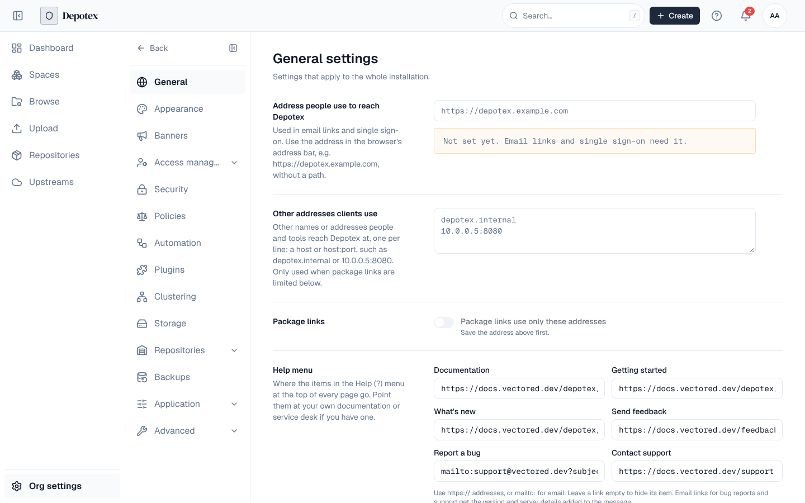

Settings live in PostgreSQL, encrypted where they hold a secret, and apply to every server as soon as they're saved. Settings in the left navigation shows each person only the pages their permissions allow. Every change is recorded in the audit log, and most raise an event a policy can stop or automation can react to.

1. Installation
| Page | What it configures | Permission | Tier | Docs |
|---|---|---|---|---|
| General | The Depotex address, other addresses clients use and the package links switch, the Help menu's links | settings:write | All | Install Depotex |
| Appearance | Application name, brand colors, logos and browser icons per theme | settings:write | Enterprise | Branding |
| Banners | Announcements at the top of every page, scheduled and per audience | settings:write | All | Banners |
| Application → Licensing | The license, its use against limits, and updating it | licenses:admin | All | Licensing |
| Application → Email | SMTP or Amazon SES, the sender, a test message | email:manage | All | |
| Clustering | Servers, their health, leader, Redis state | Super admins | All (a cluster needs Pro) | Single Node & Cluster |
| Storage | Where artifacts and platform files are stored; moving them | storage:admin | All | Storage |
| Backups | Backups, targets, encryption, restores and test restores | backups:read / backups:write | All (test restores Enterprise) | Backups |
2. People and access
| Page | What it configures | Permission | Tier | Docs |
|---|---|---|---|---|
| Access → Users | People: create, invite, suspend, roles, sessions, privacy requests | users:read / users:write | All | Users & Directories |
| Access → Groups | Groups and their members and roles | groups:read | All | Groups |
| Access → Directories | Local, LDAP, Active Directory, Entra ID, Google Workspace, SCIM, Delegated; sync | directories:read | All | Directories |
| Access → Single sign-on | OpenID Connect and SAML providers | sso:manage | Enterprise | Single Sign-On |
| Access → Applications | OAuth applications, AI agents, linked Depotex installations | oauth_apps:manage | Pro | OAuth Applications |
| Access → Service accounts | Non-human accounts for machine access | oauth_apps:manage | Pro | Service accounts |
| Security | Sign-in, sessions, CAPTCHA, anonymous access, rate limits and quotas, proxy checksums | settings:write (per tab) | All (some tabs Pro) | Signing in, Rate Limits |
| Policies | Rules that block, warn or adjust actions; dry runs, compliance scans | policies:read | Pro | Policies |
| Automation | Alerts, webhooks and emails on events | automation:read | Pro | Automation |
| Plugins | Install, permissions, settings, limits, data and keys of plugins | plugins:read | Pro | Plugins |
3. Repositories
| Page | What it configures | Permission | Tier | Docs |
|---|---|---|---|---|
| Repositories | Artifact size limit, default space quota, outbound proxy, trusted certificates, remote timeouts; rebuild metadata | repository_settings:manage | All | Repository settings |
| Deleted repositories | Restore or permanently delete deleted repositories | depot:write | All | Repositories |
| Quarantine | Quarantine rules and held versions | artifacts:quarantine:manage | Enterprise | Quarantine |
| Block list | Versions refused everywhere | artifacts:blocklist:manage | Enterprise | Block list |
| Integrity | Checks that stored files are present and unchanged; repair | integrity:admin | All | Integrity |
| Vulnerability data | Where OSV data comes from: online, a mirror or an uploaded archive; what re-checks do; whether proxies refuse known-malicious packages | vulnerability_data:manage | See page | SBOMs |
| Vibe artifacts | Turning vibe artifacts on, push checks and the package list | repository_settings:manage | Enterprise | Vibe artifacts |
Upstreams (super admins) are under Upstreams in the left navigation, not Settings: see Upstreams.
4. Advanced
| Page | What it configures | Permission | Tier | Docs |
|---|---|---|---|---|
| Logging | Log levels per area, log files, exports, profiling, the audit log | audit_logs:read | All (audit log Pro) | Logging & Audit |
| System check | Health of every dependency and server | settings:write | Pro | System Check |
| Alert tuning | Mutes, and when each health check notifies and its thresholds | settings:write | All (health checks Pro) | Alert Tuning |
| Scheduled jobs | Every background job: schedule, settings, runs, run now | scheduler:read | All (changes Pro) | Scheduled Jobs |
| Event deliveries | Durable event deliveries and failures, retry | events:admin | Pro | Events |
5. Settings that aren't in Settings
| What | Where |
|---|---|
| Encryption key, first-boot database URL, ports, proxies, per-server tuning | Environment variables |
| Database, Redis, storage, license when the server can't start | The recovery page |
| A space's members, formats, upload rules, cleanup, quotas, tags | The space's own Settings tab (Spaces) |
| A repository's settings and access | The repository's Settings and Access tabs (Repository settings) |
| Each person's language, theme, notifications, sessions and tokens | Their profile (Your profile) |